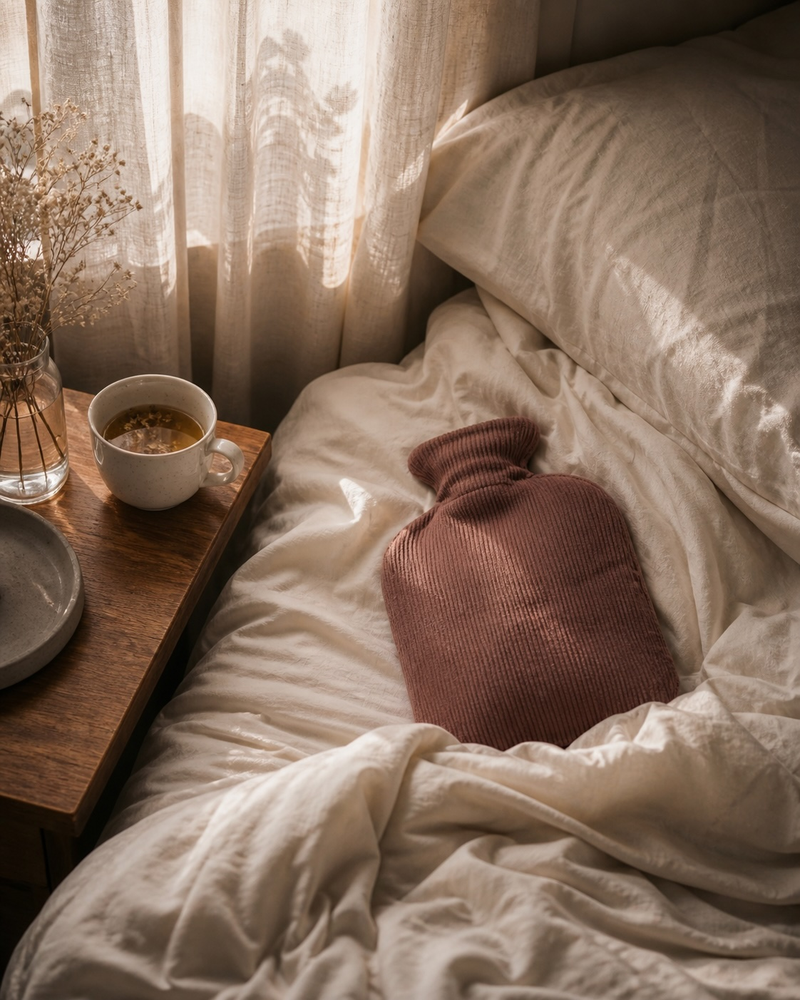

Ladylko est née d'un constat universel : à la maison, la chaleur soulage. Dès que vous sortez, plus rien ne vous suit. Nous avons décidé de combler ce vide.
Vous connaissez ce moment. La douleur monte, le ventre se noue, vous vous repliez. Vous trouvez la bouillotte. Quelques minutes plus tard, vous respirez à nouveau.
Puis il faut sortir. Travail, transports, examens, dîner avec vos amies. La bouillotte, elle, reste à la maison. Vous, non — et la douleur revient, intacte.
Une femme sur deux vit ce scénario, douze fois par an. La chaleur soulage, c'est prouvé. Mais aucune solution n'avait été conçue pour bouger avec vous, marcher avec vous, courir avec vous. Ladylko a été pensée pour ça : un vêtement qui transporte enfin la chaleur partout où vous allez.

« Chez moi, ça va. Mais dès que je dois sortir, je subis. »Camille, 26 ans — celle pour qui Ladylko a été pensée.
Matéo pilote la vision de Ladylko, l'identité de marque et la stratégie globale. Il est le fil directeur du projet, de la communication à la relation investisseurs.
Pablo pilote le développement produit, les fournisseurs et la chaîne de production. Il est la colonne vertébrale opérationnelle et technique de Ladylko.
Permettre à chaque femme de traverser ses règles sans subir — sans rester chez elle, sans médicaments par défaut, sans compromis.
Rejoindre le mouvement